Born 1989 in Mexico City. Cacho began his career as a designer. It is from his background as a designer that his practice inherited a process of research, thought and exploration towards the construction of objects. He is interested in the boundaries between craft and art. He researches everyday actions to tackle the recognition and awareness of the mundane.
His work has been exhibited at museums in Mexico including Tamayo Museum, Franz Mayer Museum and San Ildefonso College. He has also participated in the 2nd Iberoamerican Ibero-American Design Biennial in Spain. Cacho is currently enrolled in the Global Art Practice MFA program at Tokyo University of the Arts.
The daily repetition of an action may have two possible outcomes. One outcome may be a forgotten moment from our everyday lives the second is a way to achieve comprehensive mastery of our own lives. I tend to pursue the latter. I think of art as a medium to highlight and create awareness of the forgotten importance of mundane daily actions.
My practice questions the understanding of craft as a technique; as a mindlessly mechanical repetition. I am interested in the boundaries between craft and art; and with that, the intimate relationship between hand and thought. I consider the idea of craftsmanship as the elevation of a practice, and art, as the exteriorization of the thought.
2010
This huge project took around two years, I participated in it while still a trainee at La Jabonera - a design studio from Querétaro, México. It involved ASA (the organism that manages Airports in México) and CIATEQ - an advance technology centre. We were required to do the Industrial Design of a Main Unit (UMA-01) and three trailers (UMA-02 to 04), with a clear visual identity (including a fourth trailer- a crane). Maintenance systems for airports in Mexico are imported and do not satisfy their needs. This family of vehicles is tailored to the needs and contexts of Mexico’s airports.


2012
“I daresay that, to the citizens of New York, Paris or London, death is an unpronounceable word that burns the lips. Mexicans, on the other side, frequent, mock, pet, sleep with and celebrate death. It is one of our favorite toys andour deepest love. It is true that we may fear it as much as others; but at least we do not hide it nor hide from it.” - Fragment from “El laberinto de la Soledad” -Octavio Paz-
The Day of the Death tradition is full of colors, scents, sights and sounds. Inspired by all these stimuli Mictlan is designed to embrace death as part of life. The urn is hand-made by artisans from Tarandacuao, Guanajuato in central Mexico.

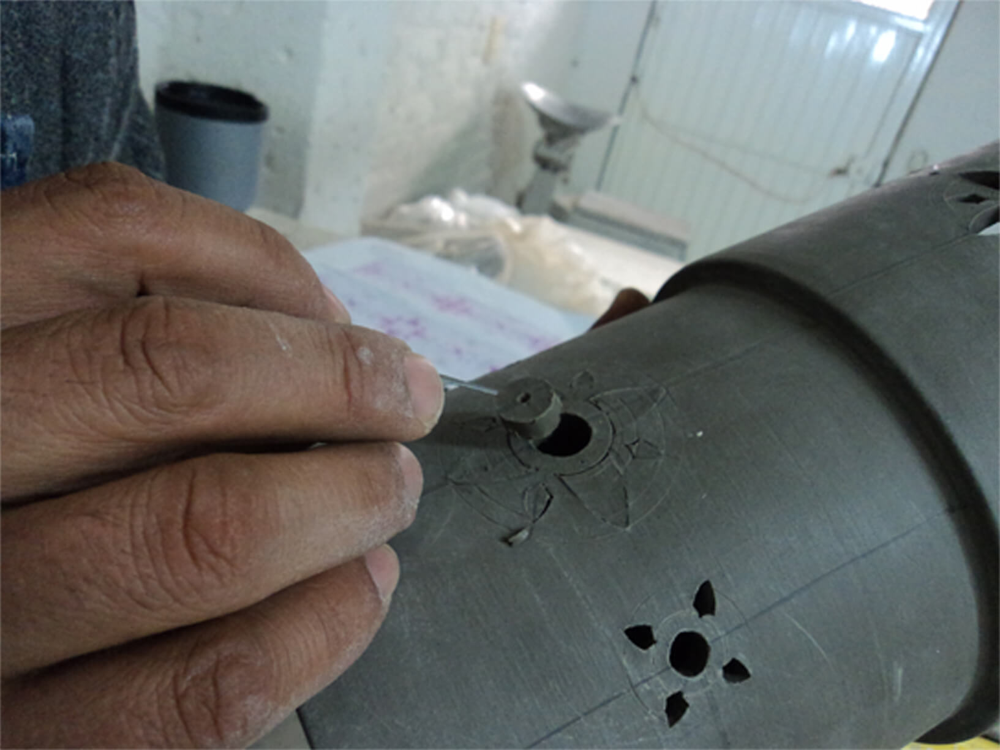
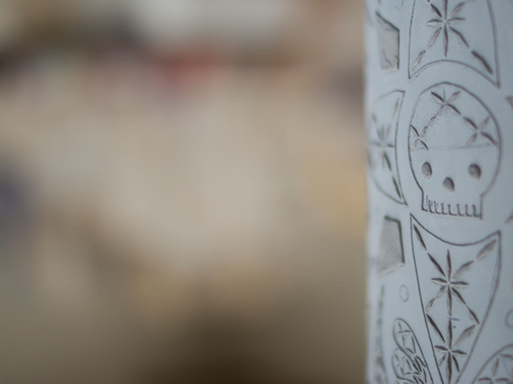
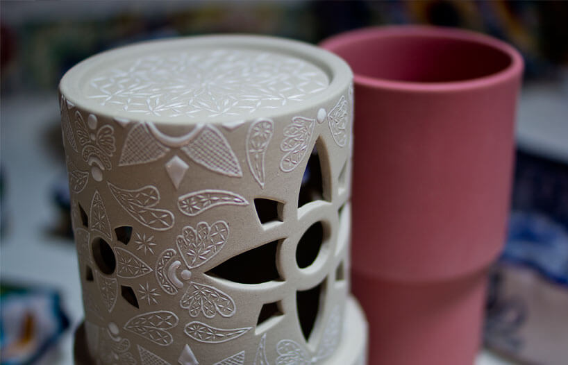


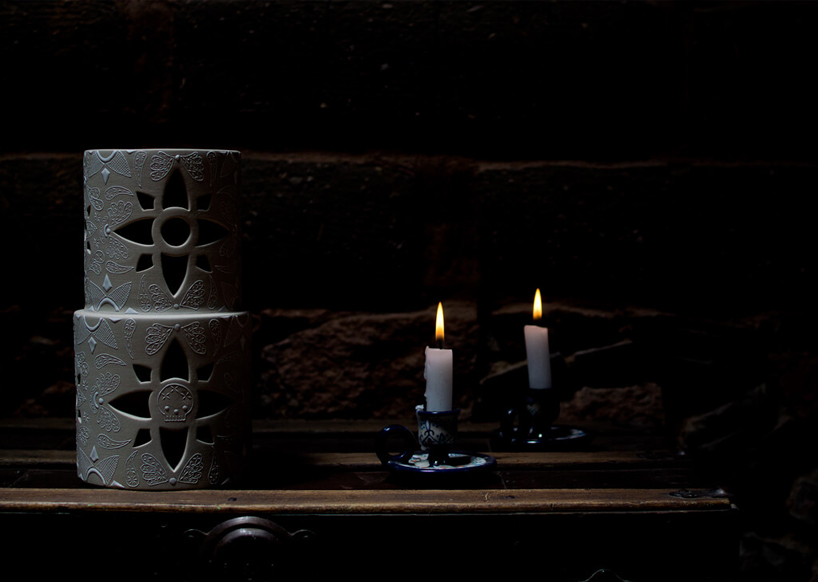
2013
Nowadays lifestyle does not leave much free time La Loma is a low table to enjoy a picnic in the comfort of your home. The rug is crafted in 100% wool by Mr. Granados from the mountain towns of Queretaro, Mexico. The table is made of poplar wood and finished with linseed oil.
The perfect integration between design and the craftsmanship of the carpenter Cesario Collado allows the table to be assembled entirely by hand within seconds


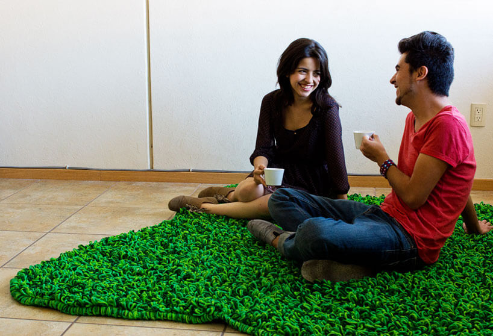
2014
Each year ZONA MACO, Latin America’s most important contemporary art fair, brings collectors, specialists and galleries from every part of the world together in Mexico City. Pirwi Pavillion for this art fair exhibits months of work of the PreFab Houses Project. Within the pavilion there is work from 8 different artist with whom Pirwi collaborated.
As head of New Product & Projects Development I was responsible for the engineering and installation of the pavilion and all the furniture within it.


2015
The pavilion is a circular structure inspired by windows. Small spaces that allow the user to perceive an instant of the everchanging enviroment. This project studies architecture as a phenomenon that combines nature and creativity. - Alejandro Castro
As head of New Product & Projects Development I was responsible for the engineering and installation of the project.


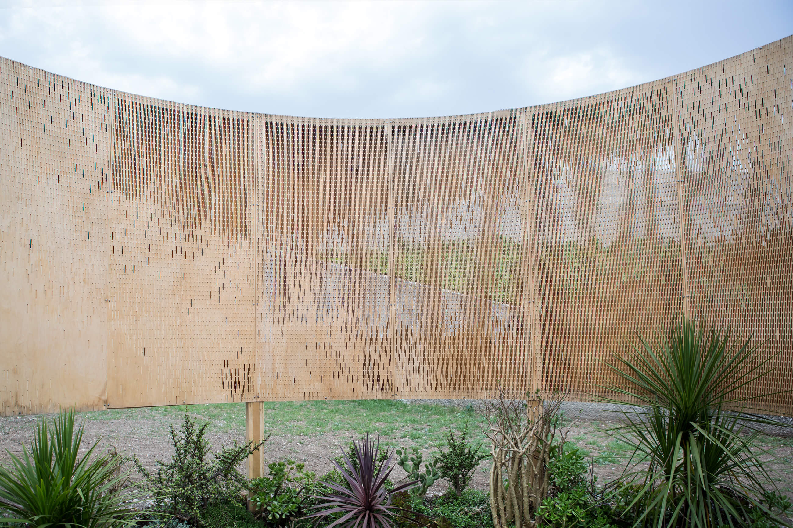


2015
"The goal is to make Pirwi a useful tool in social and environmental regeneration, which will help create a larger level of well being for the company and its workers, for those who use our products, and for the planet that allows us to manufacture them." I worked from 2012 until 2016 as Sr. Designer in the New Product Development area at Pirwi. As the new products and special projects development project leader I worked in the cencept, development, prototyping and manufacture of projects ranging form a chair to wooden pavilions.

DLK modular shelf - Design by Derek Dellekamp

DLK modular shelf - Design by Derek Dellekamp

Petzel Lamp - Design by Jorge Pardo
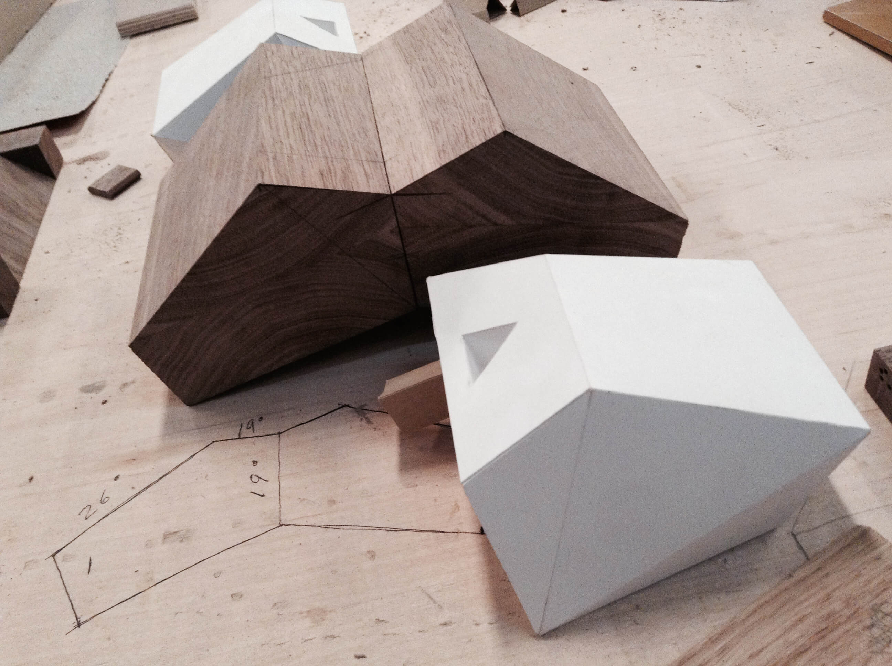
Development Process

6AM Chair - Design by Emiliano Godoy
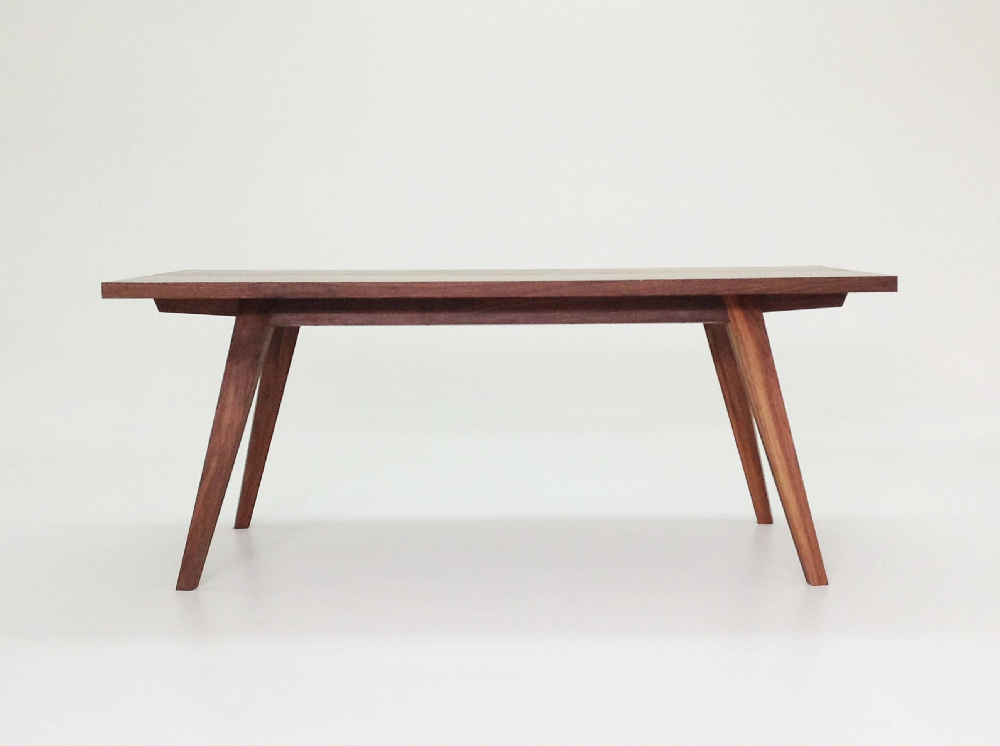
Martina Table - Design by Ian Ortega
2016
The wedge is one of the oldest and most applied principles in Japanese woodworking. As a basic exercise to comprehend and learn the joint I developed two beam compasses.
Two ideas, a line as the union between two points. And a line as one of the simplest forms of visual communication inspired these designs. Straight and simple lines define the form of both compasses.
In one, minimizing the impact of the pencil and the needle to the minimum. Therefore, leaving the all the protagonism to the form and the concept.
On the other hand, the second design gives to the pencil, or its absence, the main focus. As the pencil is the wedge itself and without it, the compass function can not be done.
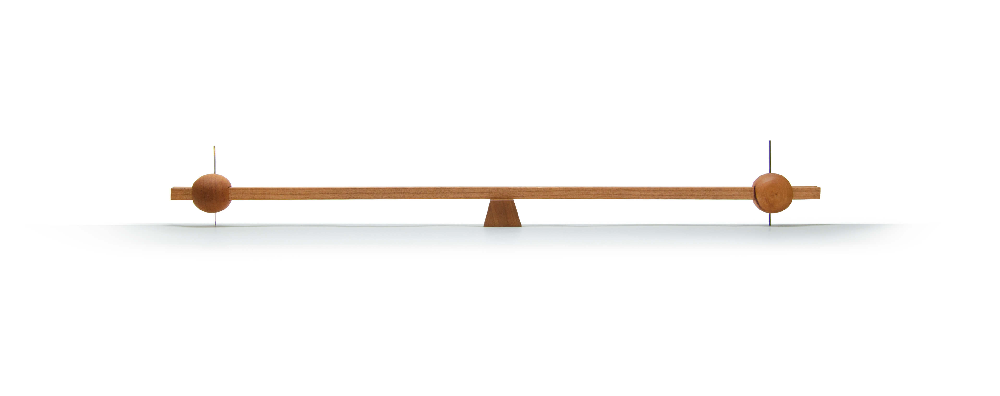


2016
The thinning of the wood in the magewappa bento joint inspired this lamp. The idea is to create a gradient that is only visible when the light is on. This gradient seeks to unveil the beauty add warmth of wood. The presicion on the thickness progresion in the material can only be achieved manually with the Japanese wood planer, kanna.
The bottom joint of the lamp shade is made with a small wooden insert and tighten up together with Japanese cherry bark.


2017
The concept of this project derives from the question: What is beautiful?
I think that the answer to this question lies within each person. In a world that is more connected than ever before, and a society that is growing in diversity. Nowadays is important to acknowledge the beauty in diversity.
Despite the fact that we are all equal details make us all different. There’s an opportunity to see the color of each person, to see the characteristics that make us unique.
This cups may appear equal. But if you look closely to the inner side, just like people, they have diverse colors.

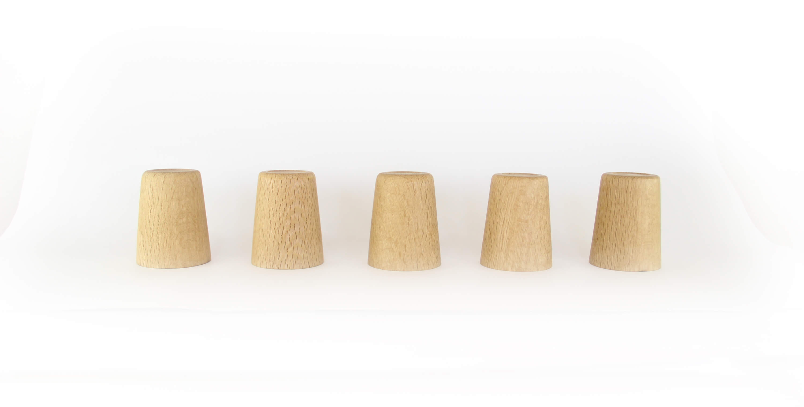
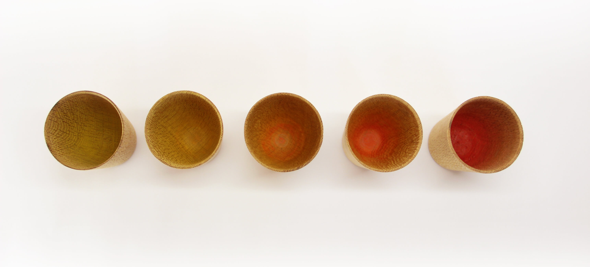

2017
Inspired by tradicional Japanese carpentry, this table can be totally disassembled thanks to the dovetails and wedges used for its construction.
It is finished with soap inspired by the Danish carpentry.

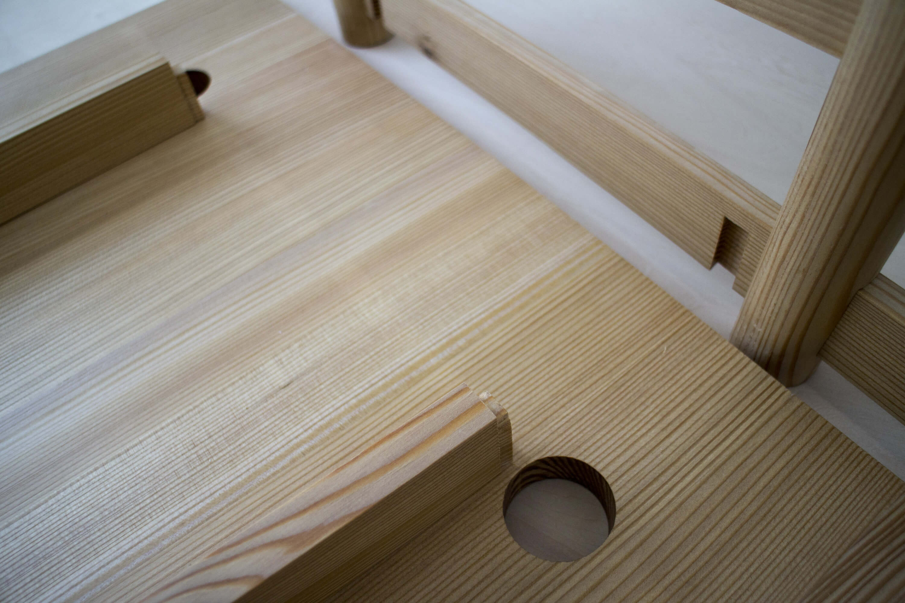


2017
The artwork is a reminder of the constant cycle of construction and deconstruction in which society is immersed. From colonialism to consumism. An endless loop of apropiation and transformation.
A column of the pavilion was removed and replaced with a pitchfork made from an old telegraph pole. After that, chopsticks were made from the wood of the original column.
This artwork was made in collaboration with Stephen Palmer from the Folkestone Shedders, a group of ex-military personnel working with wood. In Stephen experience during his sailor days, Wednesdays were meant to “Make and Mend” anything that needed repair in the boat.


©Global Art Joint Curriculum 2017 between Central Saint Martins, University of the Arts London and Tokyo University of the Arts